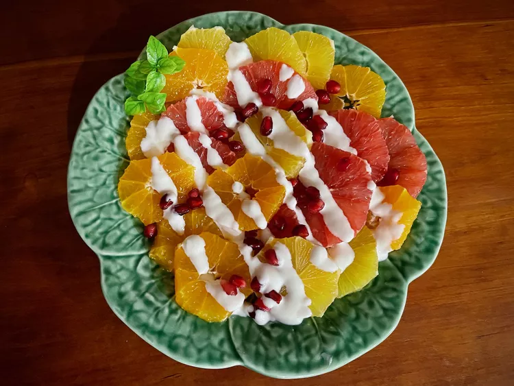

Citrus and Pomegranate Salad

Description
Sweet oranges, tangerines, ruby grapefruit, and pomegranate arils
make a lovely salad for any time of day, or any occasion.
The simple dressing complements it, perfectly.
Use any combination of fresh sweet citrus.
Prep Time: 15 mins Total Time: 15 mins Servings: 4
Ingredients
- 2 pink or ruby-red grapefruits
- 2 navel oranges
- 4 tangerines
- 1/2 cup pomegranate arils
- 1/2 cup sour cream
- 1/4 cup frozen lemonade concentrate, undiluted
- fresh mint sprigs for garnish (optional)
Steps
- Peel grapefruits, oranges, and tangerines with a serrated edge knife,
being careful to remove the white pith.
-
Slice all citrus fruit crossways and remove any seeds.
Evenly distribute slices amongst 4 salad plates.
Sprinkle pomegranate arils evenly over each salad.
-
Stir together sour cream and undiluted lemonade concentrate
in a small bowl for the dressing until smooth.
Drizzle dressing over each salad. Garnish with mint sprigs.
Home